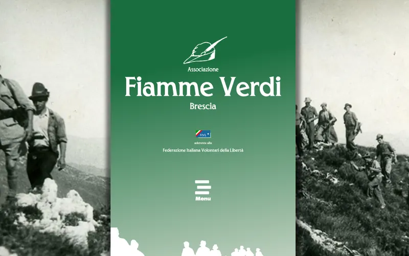
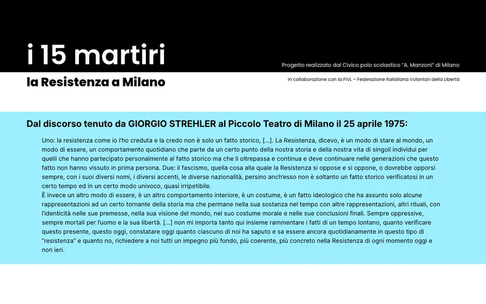
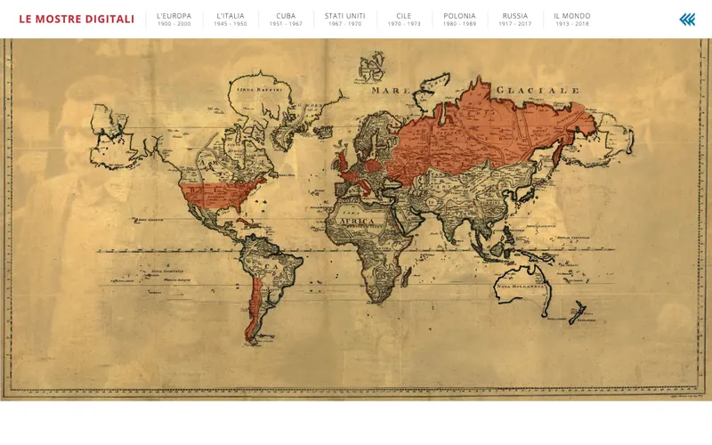
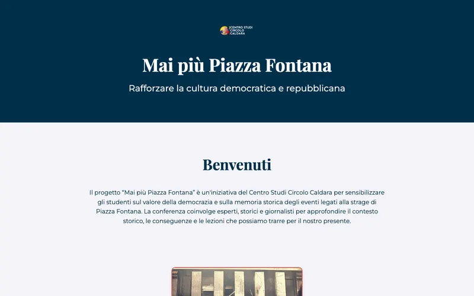
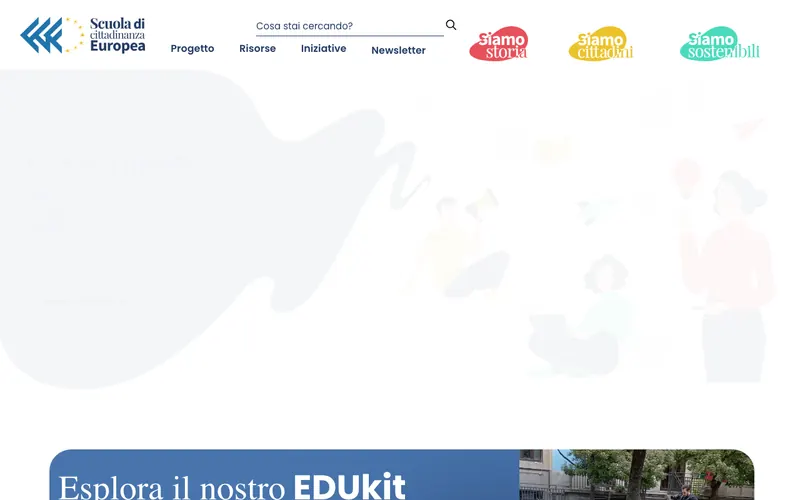
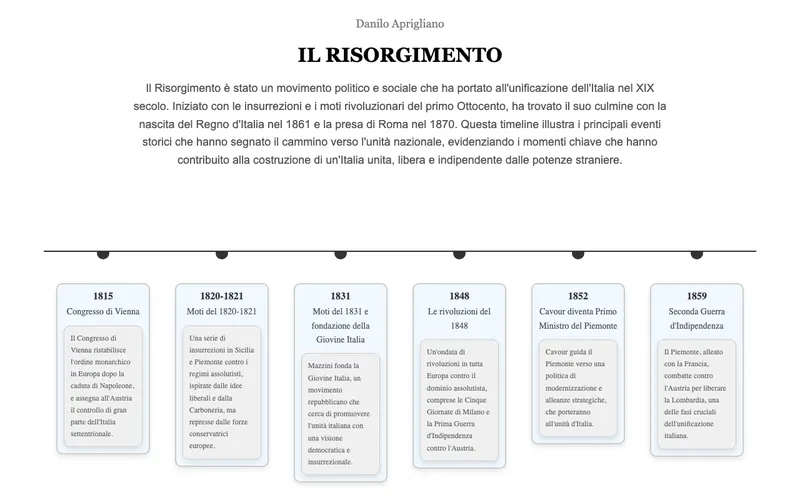

Siti e applicazioni
Progetto e sviluppo applicazioni web da capo a fondo, e curo i siti di associazioni, riviste e progetti culturali: architettura dei contenuti, dominio, manutenzione, sicurezza. Per un archivio o un’associazione un sito è uno strumento di lavoro, non una vetrina.
Un cruscotto che tiene insieme archivi, agenda e ricerca
In corsoapplicazione web, sviluppo continuo · non pubblica
Applicazione che ho progettato e scritto per intero: gira come worker su infrastruttura serverless, non ha un database proprio e a ogni richiesta interroga e incrocia le fonti (un archivio di note e progetti, la posta, il calendario, una biblioteca, una rassegna stampa con lettore vocale), restituendo dati calcolati al volo. Comprende un’API autenticata con cui agenti automatici leggono e scrivono. Non ha un indirizzo pubblico perché contiene la mia posta e i miei archivi: la cito perché è la prova di che cosa so costruire da solo, e chi insegna questi strumenti dovrebbe averli anche montati.

«il ribelle», archivio digitale del foglio clandestino
2013digitalizzazione, indicizzazione e messa in rete · il-ribelle.it
Il primo archivio che ho costruito: la raccolta completa del foglio clandestino delle Fiamme Verdi, digitalizzata numero per numero e resa consultabile. Il problema non era tecnico ma editoriale: dare a chi cerca un nome, una data o un fatto un modo per arrivarci senza sapere già dove guardare. La storia del progetto sta nella pagina di public history.

Fiamme Verdi di Brescia
Dal 2014sito e storia digitale, manutenzione continua · fiammeverdibrescia.it
Il sito delle Fiamme Verdi bresciane: documenti, biografie, cronologia della guerra partigiana in Valtellina e sul Mortirolo. Lo tengo in piedi dal 2014 – dominio, aggiornamenti, sicurezza – ed è da questo lavoro sulle fonti che è nato il capitolo per Marsilio.

I XV Martiri di Piazzale Loreto
In corsosito e podcast, costruiti con una classe quinta · i15martiri.daniloaprigliano.it
Un sito d’archivio fatto insieme agli studenti: sono loro a cercare i documenti, a scrivere le schede e a registrare le voci; io monto l’impianto e insegno il metodo. È il modo in cui il lavoro sul web e quello in aula diventano la stessa cosa. Il percorso con la classe è raccontato altrove.

Le mostre digitali della Fondazione Feltrinelli
2019allestimento digitale di cinque esposizioni · risorsedigitali.fondazionefeltrinelli.it
Cinque mostre costruite per il web e non trasportate sul web: «Il Che vive!», «La Polonia di Solidarność», «Una storia europea chiamata Rivoluzione», «La nuova frontiera americana», «Cile 1973». Ogni percorso ha una sua struttura di lettura, perché una sala e uno schermo non si visitano allo stesso modo.

«Mai più Piazza Fontana»
2024sito del progetto per le scuole del Centro studi «Emilio Caldara» · daniloaprigliano.github.io/maipiupiazzafontana
Progettato e scritto per la giornata di studio che ho organizzato al Civico Polo «A. Manzoni»: programma, relatori, materiali e documenti restano in rete dopo l’evento, che è l’unica ragione seria per fare il sito di una giornata di studio.

Scuola di Cittadinanza Europea
Continuativoredazione digitale, con la Fondazione Feltrinelli · scuoladicittadinanzaeuropea.it
Il programma di formazione per le scuole sulle istituzioni e le fonti europee: curo la parte digitale e compaio fra gli autori. Insegnare a leggere un documento dell’Unione è, alla lettera, insegnare a leggere una fonte.

Materiali per la scuola, costruiti a mano
2024–2025prototipi didattici · la linea del tempo del Risorgimento · Benjamin
Due strumenti scritti per le mie classi e lasciati pubblici: una cronologia del Risorgimento navigabile e un prototipo per lavorare su un testo difficile. Li tengo qui perché mostrano che cosa vuol dire costruirsi da soli il materiale invece di adattarne uno.
Siti d’autore e riviste
Continuativoprogettazione, sviluppo e manutenzione · carolinacavalli.it
I siti personali di autrici e autori, e la rivista culturale Galápagos, che ho fondato. Seguo l’intero ciclo – architettura dei contenuti, sviluppo, dominio e hosting, aggiornamenti e sicurezza – con l’idea che per un archivio o un’associazione il sito sia uno strumento di lavoro e non una vetrina. Chi mi commissiona un sito non deve poi cercarsi qualcun altro per tenerlo in piedi.
Di ciascuno di questi lavori qui si vede il lato tecnico: come è fatto e come si tiene in piedi. Il contenuto – le storie, i documenti, le classi – sta nella pagina di public history e in quella dell’impegno civile. Questo sito è scritto a mano in HTML e CSS e pubblicato su GitHub Pages; il codice è pubblico.